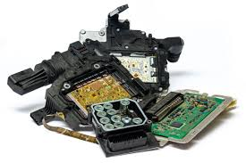
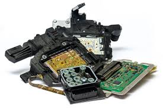

Language an entire list of words,sentences,phrases and whole lot of grammar made up of strange sounds from our mouth have the power to express ourselves and others. Without language we would have been prisoners in our minds. Without Language creative writing wouldn't be possible nor would be Internet. What would our thoughts be like if we did not know any language? We even think in a certain language (that's what I think).Language is the single most important technological leap for mankind. It dwarfs all others in comparison. And how mysterious and powerful it is to be able to take an abstract concept and implant that in the mind of another. It's an incredible feat when you think about it. It borders on being a metaphysical force.
List of languages
->CHINESE
->SPANISH
->ENGLISH
->HINDI
->ARABIC
Electronic devices now make up a huge part of the lives for the majority of the world. First radios, telephones, following that, we got televisions and mobile phones and now we're at computers, smartphones and the internet. Electricity also provides us lots of interesting technology such as space travel/exploration, special medication methods. Electricity made communication miles easier and opened up countless branches of entertainment.
 
